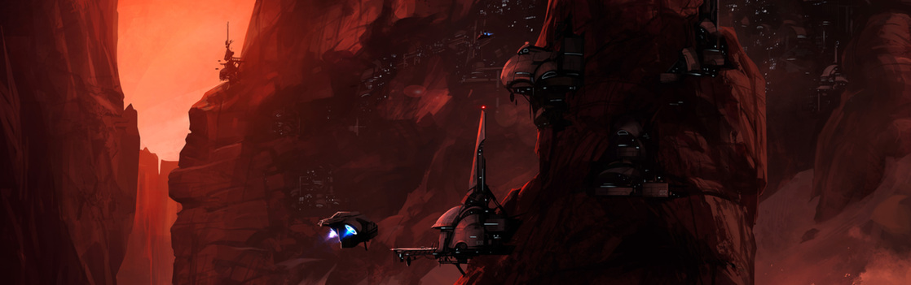

SYSTEM: TYROL

Excurs - System: Tyrol
In diesem System am Rande des Todes umkreisen sieben Planeten einen roten Riesen, der sich in seinem Spätstadium befindet. Auch wenn es schwierig ist, aus astronomischer Sicht eine Zeitschätzung abzugeben, glauben Wissenschaftler jedoch, dass der Stern innerhalb der nächsten paar tausend Jahren jederzeit in einer Supernova aufgehen könnte. Da dieser Risikofaktor so schwer einzukalkulieren ist, hat das UEE Tyrol in der Hoffnung, die Verluste so gering wie möglich halten zu können, zur wissenschaftlichen Forschungszone erklärt.
Das bedeutet, dass dort niemand Grundstücke erwerben kann und jegliche orbitale Bauten von der Regierung genehmigt werden müssen. Gleichwohl: Viele, von Non-Profit-Bildungsinstituten bis zu Herstellern hochwertiger Waffen, haben dennoch in Expeditionen nach Tyrol investiert, um die Entwicklung des Sterns zu studieren und Experimente durchzuführen. Diese Experimente wären zu gefährlich, als dass sie in stärker bevölkerten Systemen durchgeführt werden könnten.
Neben diesem wissenschaftlichen Bestreben gibt es jedoch noch einen weiteren Grund, den Weg nach Tyrol auf sich zu nehmen. Durch die beinahe nicht vorhandene Advocacy-Präsenz und den geringen UEE-Navy-Kräften ist das System ein Magnet für alle, die dem wachsamen Auge des Gesetzes entgehen wollen. Tyrol gilt im Bewusstsein der Bevölkerung daher als Synonym für wild, sorglos und verlassen. Die Banditen und Schurken, die sich dazu entschlossen haben, die zwei inoffiziellen Siedlungen dieses Systems zu bevölkern, werden oft als romantisierte Figuren gesehen – als Menschen, welche die ultimative Entscheidung für sich getroffen haben, den Tod nicht zu fürchten und frei zu leben. Die Realität hingegen ist, dass die meisten Bewohner von Tyrol ihre Wahl aus Verzweiflung heraus getroffen haben oder einfach, weil sie nirgendwo anders hingehen konnten.
Im Gegensatz zu Haven, einer weiteren einzigartigen Siedlung auf Tyrol V, bleiben die Bewohner von Front Row selten lange vor Ort. Sucht man nach illegalen Gütern und möchte auf die Einmischung der Polizei verzichten, sind die Dealer von Front Row die beste Wahl. Es wurde zu einem Ort, an dem man jeden treffen kann, von Drogen-Dealern bis hin zu skrupellosen Auftragskillern. Man sollte bei längeren Aufenthalten jedoch daran denken, dass das gesamte System jederzeit ausgelöscht werden könnte.
Der zweite und dritte Planet sind nicht der Rede wert. Forscher glauben, dass Tyrol II irgendwann einmal eine Supererde war. Heute ist er aber nur noch ein sich nicht drehender und von Flammen überzogener Eisenkern. Tyrol III ist trotz seiner reichhaltigen Mineralien ein ähnlicher Friedhof. Es gibt noch immer Diskussionen darüber, ob es sich dabei um eine von der Evolution des Sterns zerstörte Welt handelt oder ob sie sich überhaupt nie richtig geformt hatte. Mit Ausnahme der wissenschaftlichen Expeditionen zur Erforschung der Oberfläche gibt es keinen wirklichen Grund, auf Tyrol III landen zu wollen.
Egal ob „Sieben“ – wie er im System selbst bezeichnet wird – technisch gesehen ein Planet ist oder nicht, so erwarten Experten, dass es das einzige orbitale Himmelsobjekt ist, das nicht direkt von der Supernova betroffen sein wird. Mehrere Universitäten haben darüber diskutiert, den Planetoiden in eine dauerhafte, bemannte tiefgefrorene Basis zu verwandeln, von der aus der Vorgang in Sicherheit beobachtet werden kann. Doch bisher hat niemand die notwendige Finanzierung für ein solches Unterfangen auftreiben können.

„Dann lassen Sie uns Tyrol als Erinnerung an den Einfluss der Menschheit auf das Universum nutzen. Wie verzweifelt wir versuchen, die Welt um uns herum zu formen, die Natur zu zwingen, sich unserem Willen unterzuordnen, unseren Plänen, und wie klein diese Anstrengung im Vergleich zur zerstörerischen Kraft eines Sterns ist.“ – Dr. Flower Raith, Menschen gegen das Univerum, Rhetor Unity Presse, 2935
Das bedeutet, dass dort niemand Grundstücke erwerben kann und jegliche orbitale Bauten von der Regierung genehmigt werden müssen. Gleichwohl: Viele, von Non-Profit-Bildungsinstituten bis zu Herstellern hochwertiger Waffen, haben dennoch in Expeditionen nach Tyrol investiert, um die Entwicklung des Sterns zu studieren und Experimente durchzuführen. Diese Experimente wären zu gefährlich, als dass sie in stärker bevölkerten Systemen durchgeführt werden könnten.
Neben diesem wissenschaftlichen Bestreben gibt es jedoch noch einen weiteren Grund, den Weg nach Tyrol auf sich zu nehmen. Durch die beinahe nicht vorhandene Advocacy-Präsenz und den geringen UEE-Navy-Kräften ist das System ein Magnet für alle, die dem wachsamen Auge des Gesetzes entgehen wollen. Tyrol gilt im Bewusstsein der Bevölkerung daher als Synonym für wild, sorglos und verlassen. Die Banditen und Schurken, die sich dazu entschlossen haben, die zwei inoffiziellen Siedlungen dieses Systems zu bevölkern, werden oft als romantisierte Figuren gesehen – als Menschen, welche die ultimative Entscheidung für sich getroffen haben, den Tod nicht zu fürchten und frei zu leben. Die Realität hingegen ist, dass die meisten Bewohner von Tyrol ihre Wahl aus Verzweiflung heraus getroffen haben oder einfach, weil sie nirgendwo anders hingehen konnten.
Die inneren Planeten
Tyrol I – III
Der erste Planet im Tyrol System ist eine verkohlte Hülle, die sich der rote Riese langsam einverleibt. Im Jahr 2930 wurden als Teil eines Forschungsvorhabens, den sterbenden Stern aus der Nähe erforschen zu können, auf dem größten übrig gebliebenen Mond des Planeten eine Reihe miteinander verbundener Forschungsstationen errichtet. Die Unternehmensgruppe, welche für den Betrieb der Anlage verantwortlich war, konnte diese jedoch nicht einmal für ein Jahrzehnt aufrecht erhalten. Die Finanzierung wurde 2941 eingestellt und die Anlage schnell von kleinen Schmugglerringen übernommen. Die heute als „Front Row“ bekannte Bevölkerung des Mondes hat einen passsenden Sinn für Humor in Bezug auf die Tatsache, dass sie die Ersten sein werden, welche Tyrols Supernova erleben.Im Gegensatz zu Haven, einer weiteren einzigartigen Siedlung auf Tyrol V, bleiben die Bewohner von Front Row selten lange vor Ort. Sucht man nach illegalen Gütern und möchte auf die Einmischung der Polizei verzichten, sind die Dealer von Front Row die beste Wahl. Es wurde zu einem Ort, an dem man jeden treffen kann, von Drogen-Dealern bis hin zu skrupellosen Auftragskillern. Man sollte bei längeren Aufenthalten jedoch daran denken, dass das gesamte System jederzeit ausgelöscht werden könnte.
Der zweite und dritte Planet sind nicht der Rede wert. Forscher glauben, dass Tyrol II irgendwann einmal eine Supererde war. Heute ist er aber nur noch ein sich nicht drehender und von Flammen überzogener Eisenkern. Tyrol III ist trotz seiner reichhaltigen Mineralien ein ähnlicher Friedhof. Es gibt noch immer Diskussionen darüber, ob es sich dabei um eine von der Evolution des Sterns zerstörte Welt handelt oder ob sie sich überhaupt nie richtig geformt hatte. Mit Ausnahme der wissenschaftlichen Expeditionen zur Erforschung der Oberfläche gibt es keinen wirklichen Grund, auf Tyrol III landen zu wollen.
Das mittlere System Tyrol IV & Asteroidenfeld
In grauer Vorzeit wies Tyrol einen gesunden grünen Gürtel auf, in dem auch das Asteroidenfeld und der vierte Planet des Systems liegen. Das besonders dichte Asteroidenfeld, das mit ein wenig mehr Zeit vielleicht sogar ein Planet hätte werden können, enthält noch immer eine Menge wertvoller Mineralien, nach denen auch heute noch Bergarbeiter suchen – zumindest die, die genug Mittel haben, um ihre eigene Ausrüstung mitzubringen und die keine Angst davor haben, in einem System ohne Recht und Gesetz zu arbeiten. Über Tyrol IV wird spekuliert, dass es einst ein Gasgigant war, dessen Atmosphäre komplett abgebaut wurde. Zu Beginn war er eine Quelle für Edelsteine, welche einst durch den gashaltigen Überdruck geschaffen wurden. Heute sind seine wertvollen Ressourcen nur noch schwer zu finden.Tyrol V (Haven)
Der wahrscheinlich interessanteste Planet des Systems ist Tyrol V. Haven ist aus einem einfachen Grund so interessant: Es gibt dort Einheimische. Als frühere eisige Kugel wurde die Oberfläche von Haven durch die Entwicklung des Sterns in einen roten Riesen geschmolzen. Übrig blieb ein trostloser Fels, übersät mit Schluchten und gewaltigen unterirdischen Höhlen, die in Jahrtausenden unter dem Eis entstanden sind. Genau hier, versteckt unter der nun erdrückenden Hitze auf der Oberfläche, hat eine besondere Mischung aus Siedlern, Outlaws und Nihilisten ihr Zuhause. In der Populärkultur wird Haven als „letzte Chance“ für die Unverbesserlichen angesehen – eine Heimat für diejenigen, die keinen Weg mehr in das zivilisierte Universum finden können und diejenigen, die das nicht mehr wollen. Die allgegenwärtige Gefahr einer Supernova hängt über der planetaren Kultur, wird aber schlussendlich als eine Tatsache des Lebens behandelt. Es werden keine Ressourcen für Evakuierungstransporte oder Frühwarnsysteme verschwendet. Wenn man das Leben unter den Abtrünnigen auf Haven gewählt hat, hat man auch seinen Frieden mit einer Welt gemacht, auf der das gesamte Leben in einem unerwarteten Augenblick ausgelöscht werden kann. Besucher erhalten den Ratschlag, die Schattenseite von Haven nur mit starken Thermalschilden zu verlassen. Ungeschützte Individuen können die Belastung der Planetenoberfläche nur wenige Augenblicke überleben.Die äußeren Planeten Tyrol VI & VII
Der sechste Planet im Tyrol System ist ein typischer Jupiter-ähnlicher Gasgigant. Eine herumwabernde Masse aus farblichem Wasserstoff und Helium. Tyrol VI ist dadurch bisher nur geringfügig vom Verfall des Sterns betroffen. Der Planet wird häufig von Leuten für eine Tankfüllung genutzt, die töricht genug sind, das System zu bereisen, obwohl es hier keine richtigen Raffinerien gibt Wissenschaftler haben eine Holografie-Transmitter-Ausrüstung im Inneren eines Asteroiden an einem der Lagrange-Punkte des Planeten installiert, um die wahrscheinlich ziemlich beeindruckende Lichtshow aufzunehmen, die entsteht, wenn die Supernova schlussendlich die Atmosphäre entzündet – auch wenn die Astrophysik-Gemeinschaft immer noch geteilter Meinung darüber ist, ob dies wirklich eintreten wird oder nicht. Sie hoffen, dass es die Comm-Drohne noch durch den Sprungpunkt schafft, bevor das System in Flammen aufgeht. Der letzte Planet im Tyrol System ist ein kleiner Protoplanet, dessen einstiger Zustand heiß diskutiert wird, jedenfalls von denen, die sich dafür interessieren.Egal ob „Sieben“ – wie er im System selbst bezeichnet wird – technisch gesehen ein Planet ist oder nicht, so erwarten Experten, dass es das einzige orbitale Himmelsobjekt ist, das nicht direkt von der Supernova betroffen sein wird. Mehrere Universitäten haben darüber diskutiert, den Planetoiden in eine dauerhafte, bemannte tiefgefrorene Basis zu verwandeln, von der aus der Vorgang in Sicherheit beobachtet werden kann. Doch bisher hat niemand die notwendige Finanzierung für ein solches Unterfangen auftreiben können.
Reisewarnung
Schäden am Schiff zu erhalten, wenn man ein System wie Tyrol besucht, das einen Stern besitzt, der bald zur Nova wird, ist sehr wahrscheinlich. Behalten Sie Ihr Schiff daher im Auge und legen Sie ein wenig Geld auf die Seite, um Reparaturen durchführen zu können, wenn der Besuch vorbei ist.Ein Flüstern im Wind
„Vor einigen Jahren war ich auf Front Row, um darauf zu warten, dass sich ein paar Unstimmigkeiten abkühlten, als da dieses Schiff bei der Landung fast einen Unfall machte. Ein Kerl taumelte heraus, blutete stark, begann nach Yanda zu rufen, einem Mediziner, der von Zeit zu Zeit vorbeikam. Brüllte stundenlang. Fand nie heraus, dass Yanda am Tag zuvor da gewesen war. Aber was für ein nettes Schiff. Ich fliege es noch heute.“ – Corinda Fenrick, verurteilter Attentäter, 2928„Dann lassen Sie uns Tyrol als Erinnerung an den Einfluss der Menschheit auf das Universum nutzen. Wie verzweifelt wir versuchen, die Welt um uns herum zu formen, die Natur zu zwingen, sich unserem Willen unterzuordnen, unseren Plänen, und wie klein diese Anstrengung im Vergleich zur zerstörerischen Kraft eines Sterns ist.“ – Dr. Flower Raith, Menschen gegen das Univerum, Rhetor Unity Presse, 2935